Контент для брендов на нейросетях: AI-персонаж, карточки маркетплейсов, Reels
Веду собственного AI-инфлюенсера от идеи до публикаций, делаю фотосессии одежды по одному фото товара для карточек Wildberries и короткие видео под тренды. Почти 3 года инфографики для маркетплейсов и свой магазин на WB и Ozon — знаю, какая карточка продаёт.
«Саша»: персонаж, который живёт на конюшне и каждый день выходит в Reels
Придумала легенду (23 года, переехала из Москвы в деревню к своему коню), собрала эталон лица и гардероб, чтобы персонаж узнавался в каждом кадре. Каждый день разбираю трендовые Reels по кадрам и таймингам, повторяю их с Сашей: генерирую стоп-кадры, оживляю их, монтирую под звук и публикую. Фото, видео, озвучка, посты и тексты — всё делаю сама с помощью нейросетей.
Ролики выглядят снятыми на телефон: без эффектов и боке, хук в первую секунду, русский текст на видео, длина 7–15 с. Так алгоритм показывает их русскоязычной аудитории.
«Гламур переехал в деревню»: 8 кадров в одном стиле
Один образ, одна локация, одна тональность. Контраст, на котором держится персонаж: каблуки и мех в грязи конюшни. Кадры сгенерированы отдельно, затем выровнены по цвету, свету и контрасту скриптом, чтобы карусель читалась как одна съёмка. Порядок собран под листание: лицо → общий план → деталь → конь → деталь → финал.
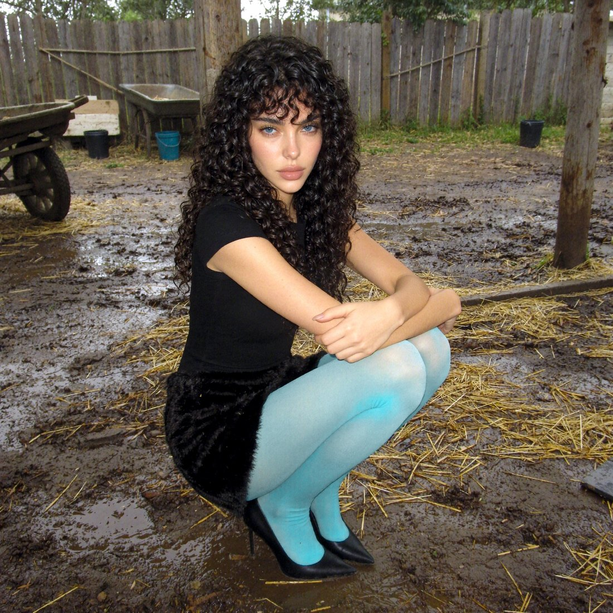
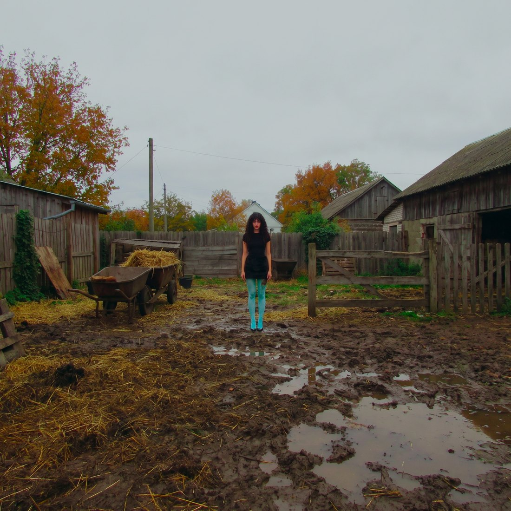
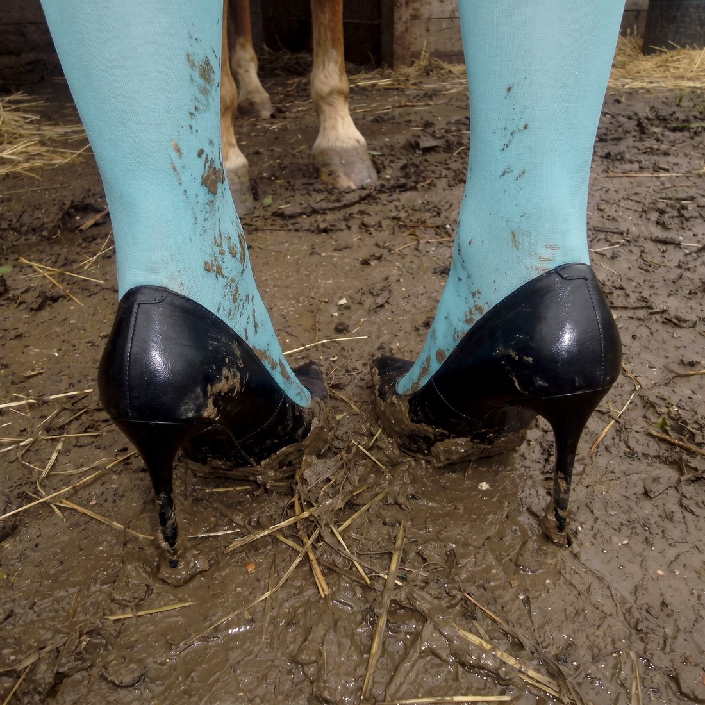
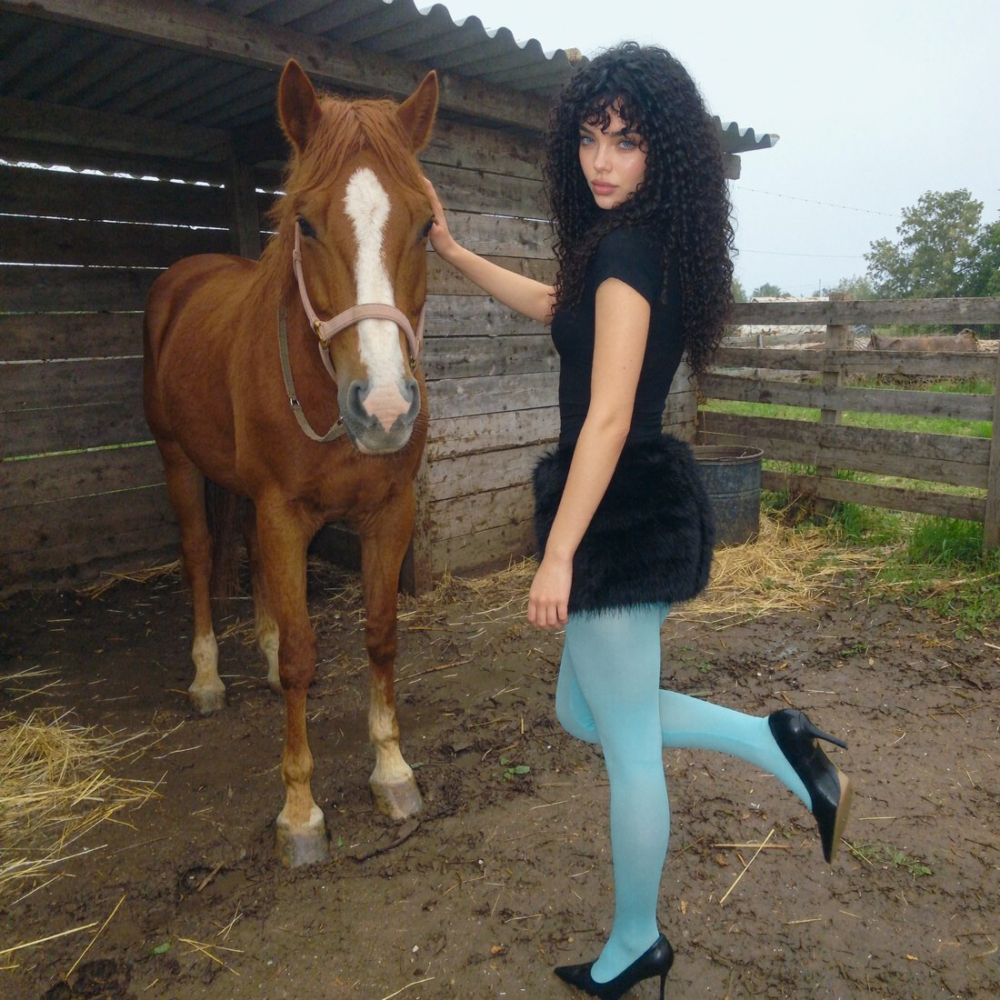
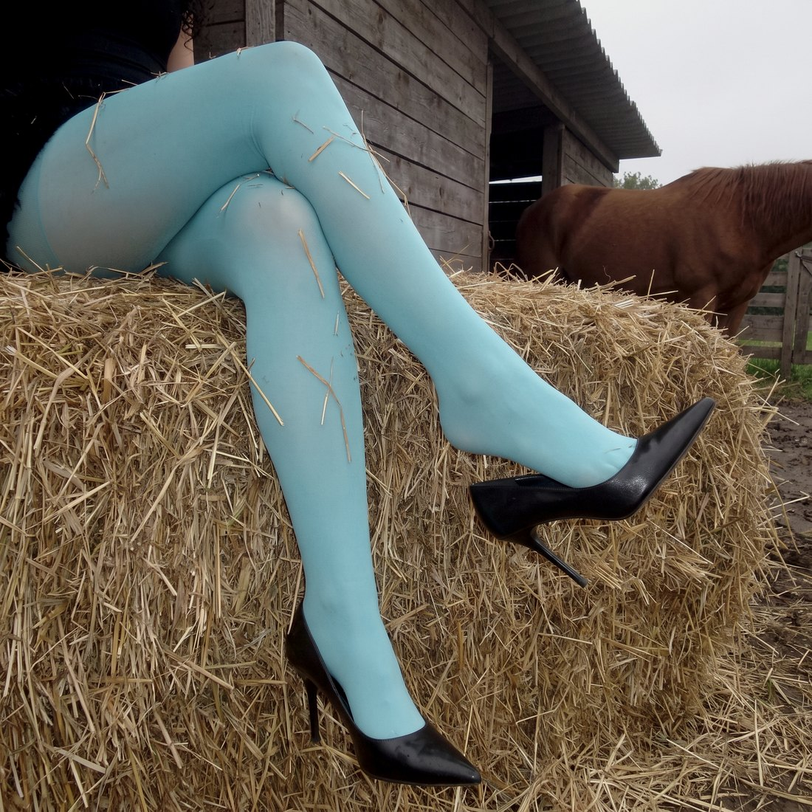
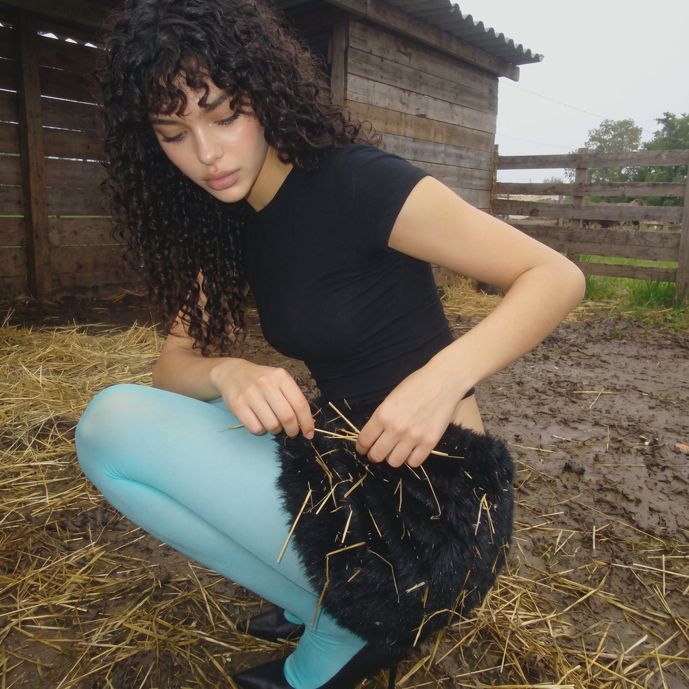
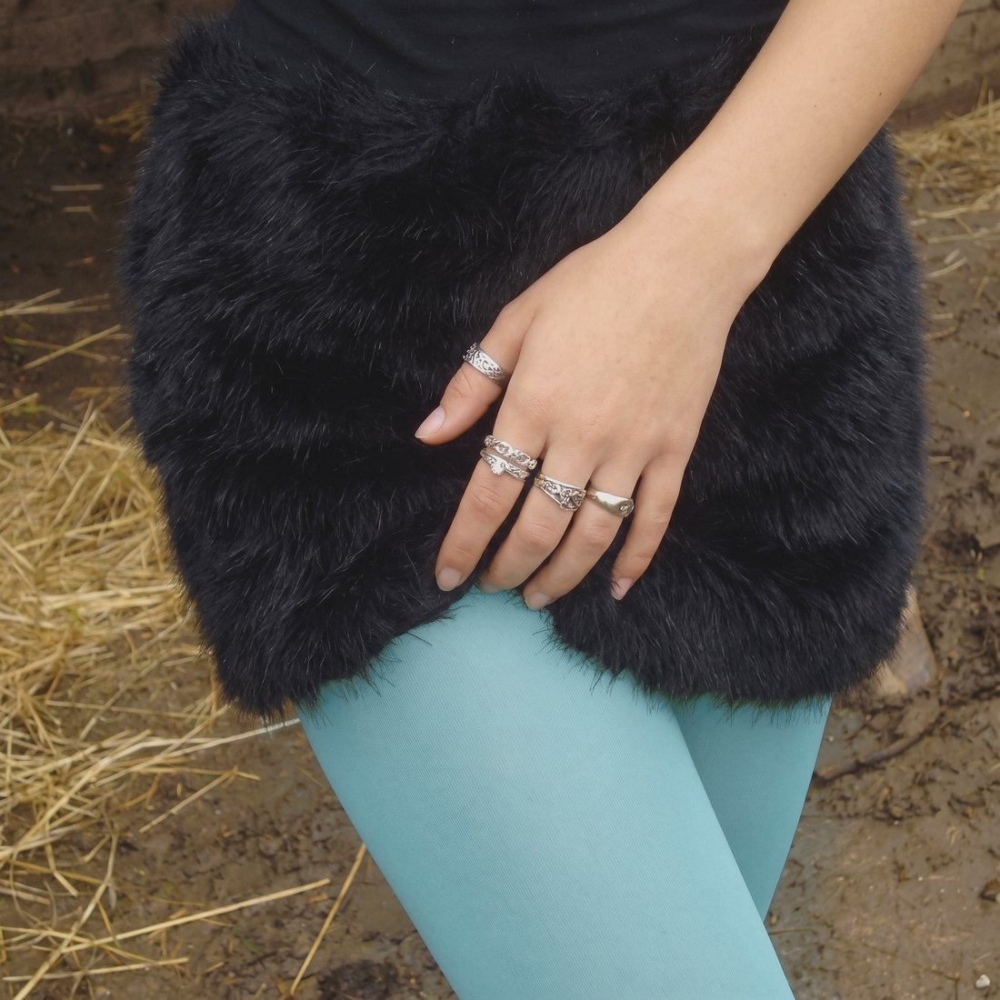
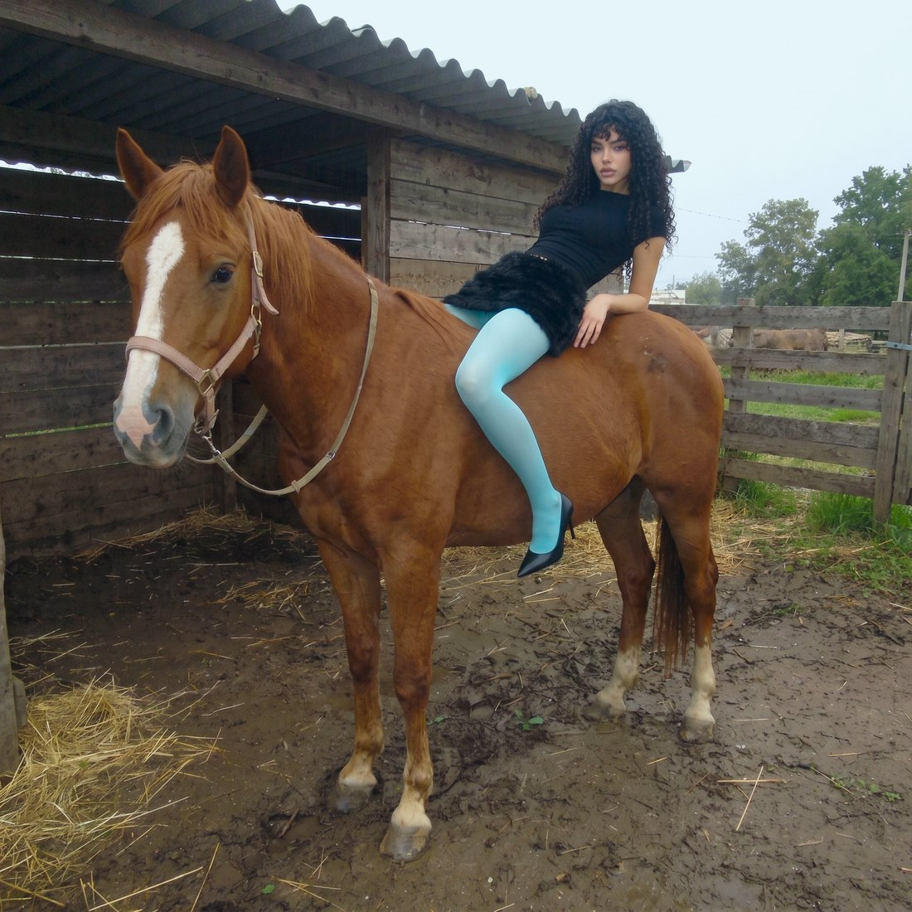
Threads: посты от лица персонажа
Короткие тексты в голосе Саши и готовые макеты под публикацию. Тема одна — девушка из города на конюшне, но каждый пост цепляет по-своему: ожидание и реальность, деревенские наблюдения, самоирония.
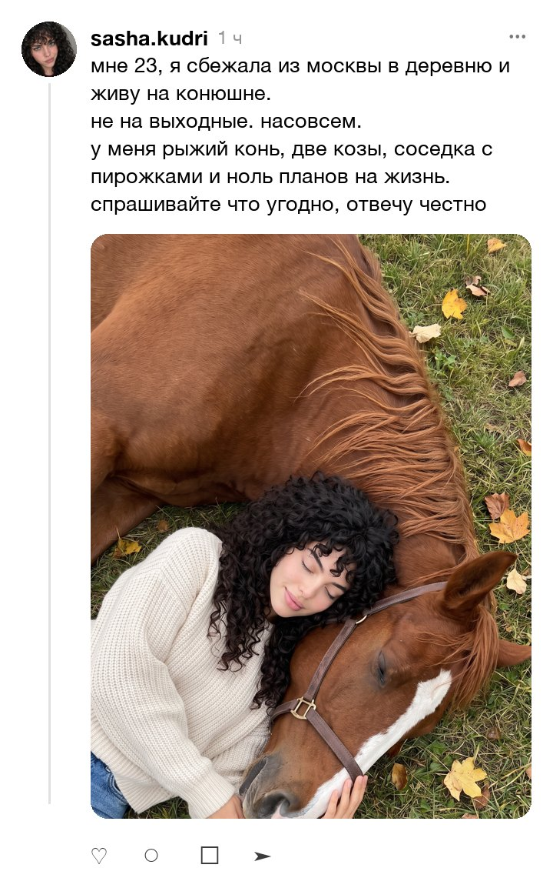
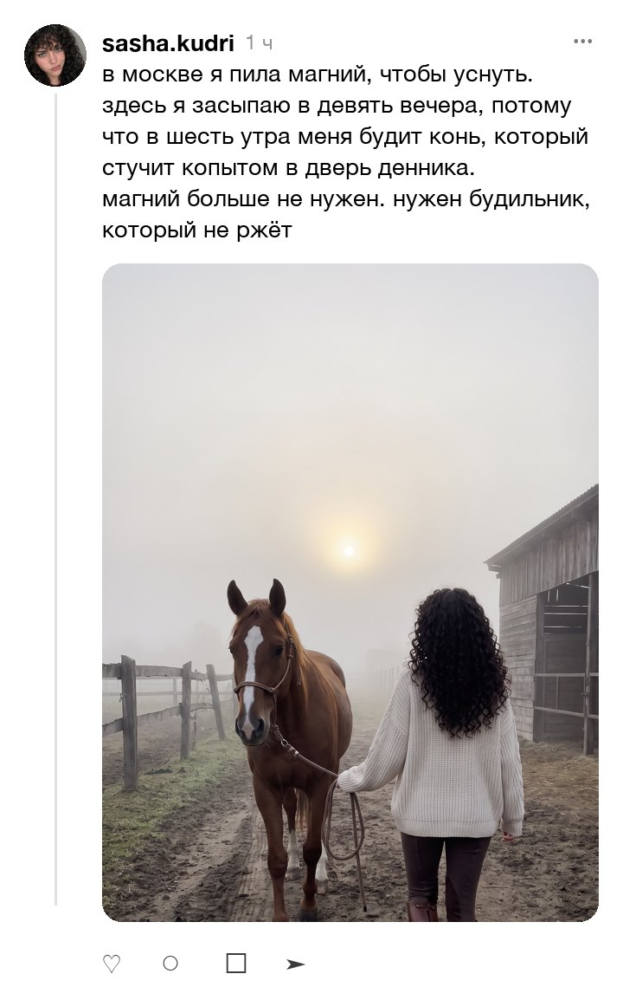
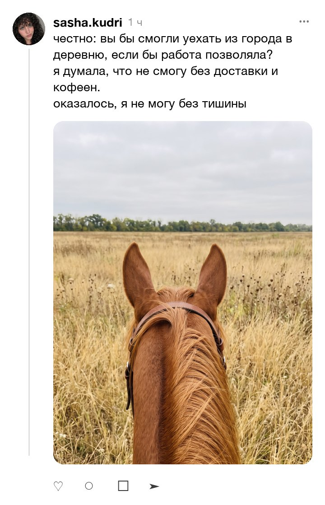
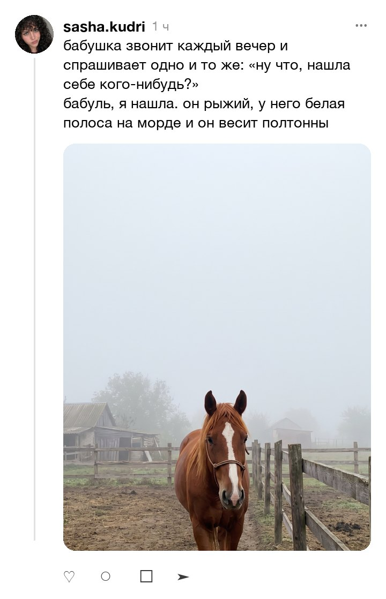
Кардиган с косами: набор фото для карточки Wildberries
Исходник — одно фото вещи без модели. Из него собран набор для карточки: главное фото на светлом фоне, деталь вязки, вариант носки нараспашку, ракурс в три четверти для посадки и длины, лайфстайл-кадр. Узор кос, цвет, V-вырез, застёжка без пуговиц и длина совпадают с товаром.


Тот же кардиган: 5 слайдов инфографики для карточки
Из AI-фото собрана карточка целиком: обложка с главными преимуществами, детали крупным планом, состав и уход, размерная сетка, лайфстайл с подсказками «с чем носить». Формат WB 900×1200, текст свёрстан вручную, поэтому он чёткий и без ошибок. Состав и размеры в макете условные.


Шёлковый топ с кружевом: от фото товара до фешн-серии
Исходник — только фото топа на сайте бренда. Задача: собрать серию как для карточки и соцсетей, с одной моделью, одной локацией и точным кружевом в каждом кадре.


Проверяю каждый кадр крупно: кружево, бретели, руки и пальцы, лицо. Брак переделываю до сдачи.
Тот же образ на разных типажах для A/B-тестов карточки
Одна вещь, одна локация, одинаковый свет. Меняется только модель: блондинки, рыжие, брюнетки, разная фактура волос. Так можно проверять гипотезы CTR на главном фото, не пересобирая съёмку.


Ролики для карточек товаров и Reels бренда
Видео с одной и той же моделью: переходы, смена образа, демонстрация волос и одежды в движении. Повторяю трендовые форматы по референсу, кадр за кадром, с липсинком и озвучкой.
Пишу сценарии Reels и разбираю, почему ролик залетает
Два тестовых задания, выполненных для работодателей: разбор монтажа продающего ролика по секундам и сценарии Reels для эксперта с разбором вирусного референса.
Разбор монтажа продающего Reels
Первая минута ролика по склейкам: где хук, зачем каждая смена кадра, где зритель уходит и как это исправить. Таблица таймингов и список правок.
Открыть документСценарии Reels и сторис для эксперта
Два момента из прямого эфира, переписанных в сценарии на 30–45 секунд: хук, структура, текст на экране, призыв. Плюс разбор залетевшего Reels: почему смотрят до конца.
Открыть документПроцесс
- Разбираю задачу, ЦА и конкурентов: карточки в выдаче, тренды категории или вирусные ролики в нише.
- Делаю базовый кадр: модель или персонаж, образ, локация. Согласовываю его до серии.
- Собираю серию от одного базового кадра, чтобы вещь и лицо совпадали во всех ракурсах и видео.
- Проверяю детали вещи один в один: фактуру, швы, фурнитуру, посадку. Руки и лица смотрю крупно, брак переделываю.
- Для видео: раскадровка по таймингам референса, генерация клипов, монтаж под звук, текст на экране, озвучка и липсинк.
- Отдаю в форматах площадки: WB 900×1200, Reels 1080×1920, карусели, обложки. Для карточек предлагаю варианты главного фото под A/B-тест CTR.